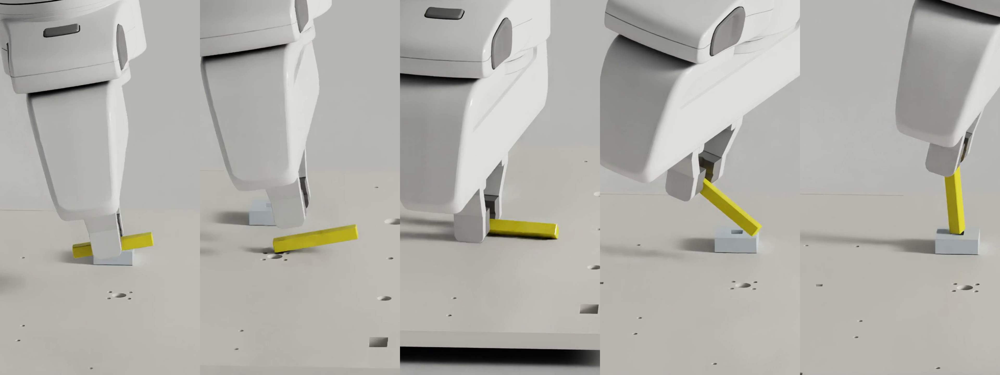

The assembly challenge

The NIST board combines twenty assembly tasks, with parts as small as 4 mm. A single assembly may require repeated changes of grasp and orientation before insertion is possible. Tight clearances and friction make contact difficult to control: a slight tilt can cause a nut to cross-thread or jam instead of advancing along the bolt. Parts can also slip during manipulation, requiring the robot to recover and try again.
With several components, each assembly changes the conditions for the next. Installing one part can obstruct access to another or leave less room for the gripper to move. The robot may need to bring a part within reach, leave it unfinished, and return after assembling something else. These decisions have consequences much later in the sequence, while the task reward is withheld until every active component is assembled.